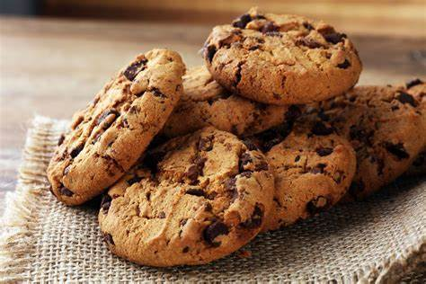

Cookies Recipe

Description
Immerse yourself in the world of homemade goodness with this cherished cookie recipe, passed down through
generations.
Picture a kitchen suffused with warmth and the comforting scent of baking, where memories are made and shared
over sweet
treats. Embark on a journey of culinary delight as we unlock the secrets to creating the perfect batch of
cookies, each
bite a delightful reminder of the simple joys in life.
Before we dive into the meticulous details of ingredients and steps, take a moment to appreciate the anticipation
that
comes with crafting these delectable delights. Envision the soft flicker of candlelight dancing across the
countertops,
casting shadows as you gather the necessary tools and utensils. Feel the excitement building within as you
prepare to
embark on a culinary adventure that promises not only delicious results but also a sense of accomplishment and
satisfaction.
Ingredients
- 2 and 1/4 cups (280g) all-purpose flour
- 1 teaspoon baking soda
- 1/2 teaspoon salt
- 1 cup (230g) unsalted butter, softened
- 3/4 cup (150g) granulated sugar
- 3/4 cup (150g) packed light brown sugar
- 1 teaspoon vanilla extract
- 2 large eggs
- 2 cups (340g) semisweet chocolate chips
Steps
- Preheat your oven to 350°F (175°C). Line a baking sheet with parchment paper or lightly grease it.
- In a medium-sized bowl, whisk together the all-purpose flour, baking soda, and salt until well combined. Set
aside.
- In a large mixing bowl, cream together the softened unsalted butter, granulated sugar, and packed light
brown sugar
until light and fluffy.
- Beat in the eggs, one at a time, then add the vanilla extract and mix until fully incorporated.
- Gradually add the dry flour mixture to the wet ingredients, mixing until a smooth dough forms.
- Fold in the semisweet chocolate chips until evenly distributed throughout the dough.
- Using a cookie scoop or spoon, drop rounded tablespoons of dough onto the prepared baking sheet, leaving
some space
between each cookie for spreading.
- Bake in the preheated oven for 8 to 10 minutes, or until the edges are lightly golden brown.
- Allow the cookies to cool on the baking sheet for a few minutes before transferring them to a wire rack to
cool
completely.
- Enjoy your homemade chocolate chip cookies with a glass of milk or your favorite beverage!